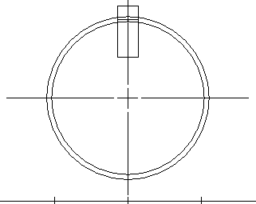
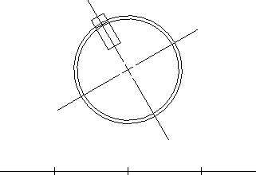
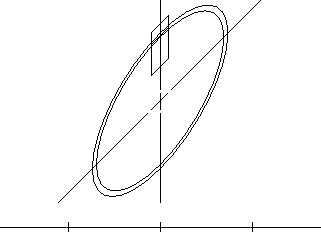
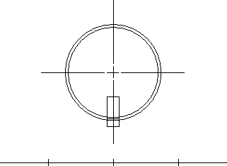

description: 'Coordinate spaces and transformations are used by the following types of applications:'
ms.assetid: 29a9f133-6c21-40dc-84b5-095dd5d4526b
title: About Coordinate Spaces and Transformations
ms.topic: article
ms.date: 05/31/2018
About Coordinate Spaces and Transformations
Coordinate spaces and transformations are used by the following types of applications:
- Desktop publishing applications (to "zoom" parts of a page or to display adjacent pages in a window).
- Computer-aided design (CAD) applications (to rotate objects, scale drawings, or create perspective views).
- Spreadsheet applications (to move and size graphs).
The following illustrations show successive views of an object created in a drawing application. The first illustration shows the object as it appears in the original drawing; the succeeding five illustrations show the effects of applying various transformations.






The following subtopics describe various aspects of coordinate spaces and transformations.
Â
Â